Helpdesk bằng AI Agent
Trợ lý trả lời khách 24/7 qua live chat, Telegram và email. Agent chỉ trả lời từ kho chính sách nội bộ đã lập mục lục; không tìm thấy thì chuyển cho người.
n8nObsidianLLM grounding
Làm IT ở MIC, kể chuyện bằng tranh vẽ ngoài giờ. Dùng AI và code để tự động hóa công việc, và để kể những câu chuyện về lòng tốt và đức tin.
Một câu nói, vài cảnh vẽ, một giọng đọc. Khung dọc 2:3 cho mạng xã hội, chữ hiện theo nhịp lời đọc và chữ đỏ đánh dấu ý chính.
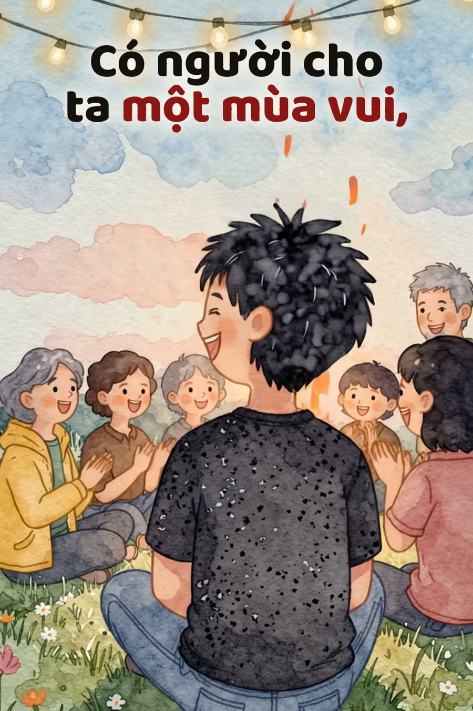
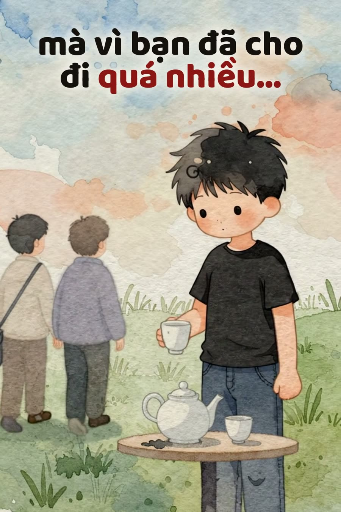
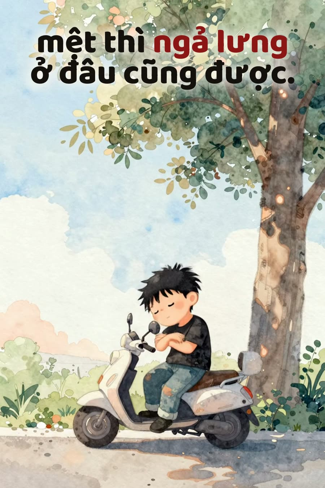
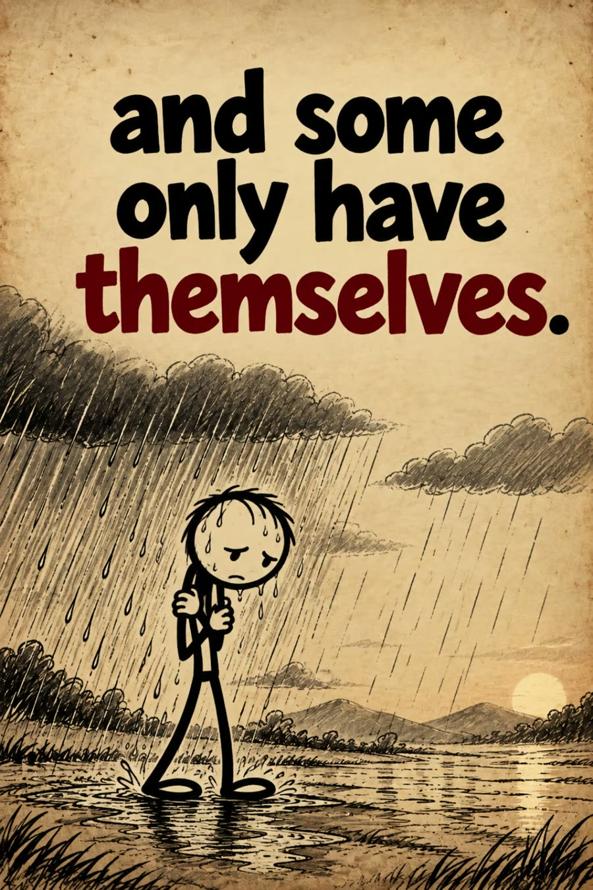
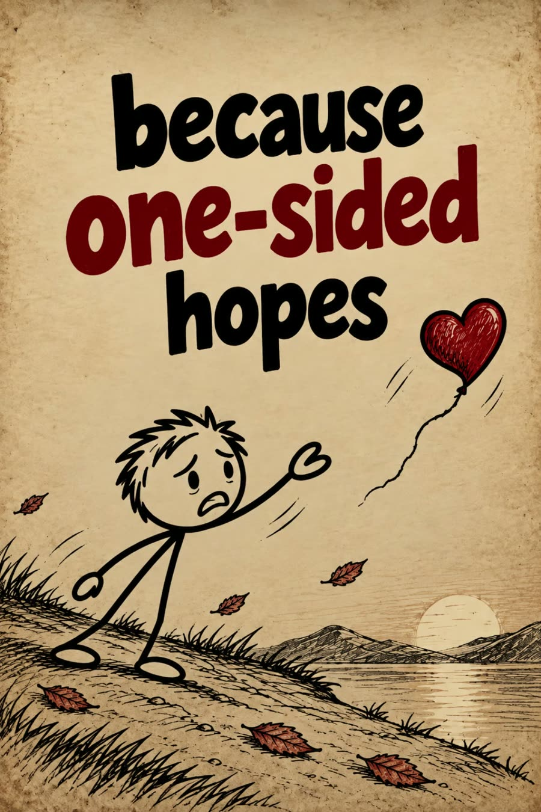
Phim ngắn cho thiếu nhi và giới trẻ: dụ ngôn, giáo lý YOUCAT for Kids, chuyện thường ngày. Có lồng tiếng, nhạc và phụ đề tiếng Việt.
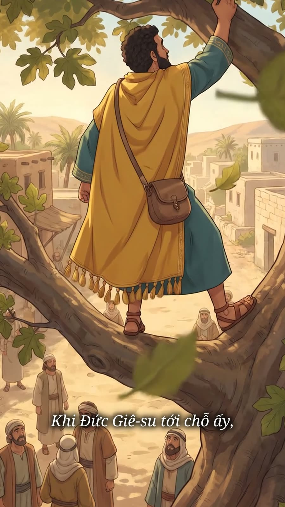
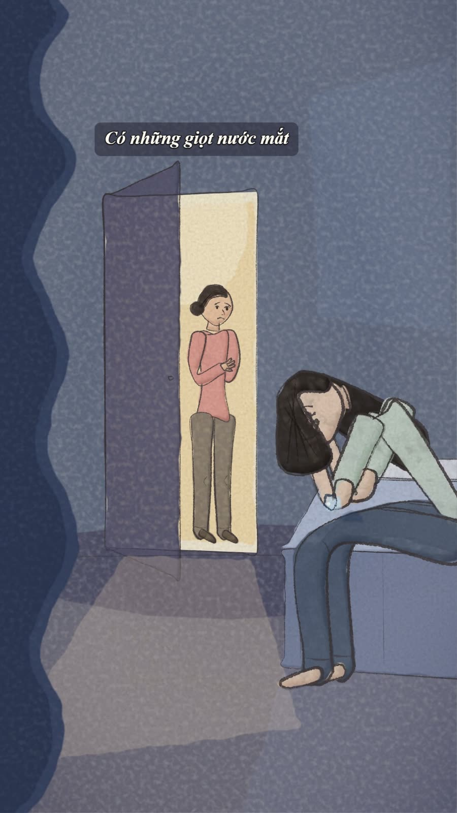
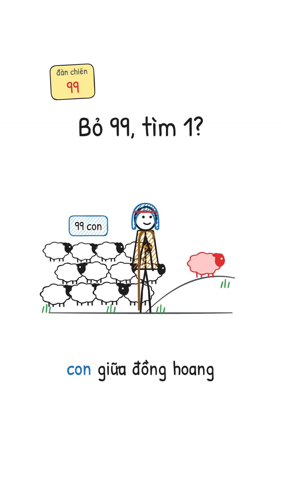
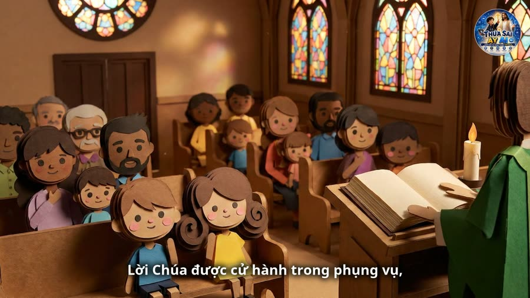
Bảng nhân vật nhiều góc nhìn để giữ nhân vật nhất quán qua các tập phim, cùng tranh minh họa và meme.
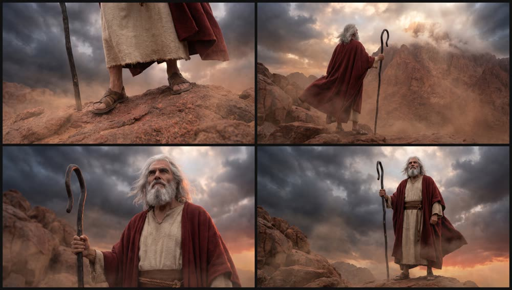
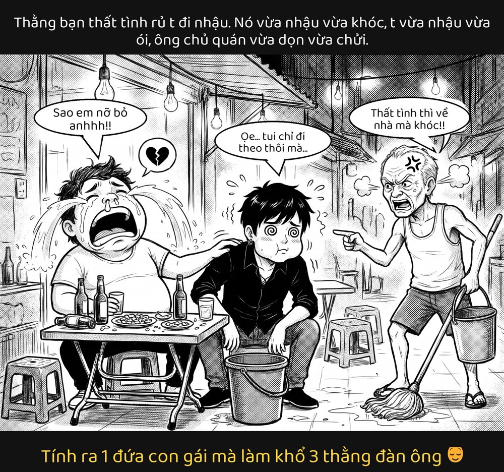
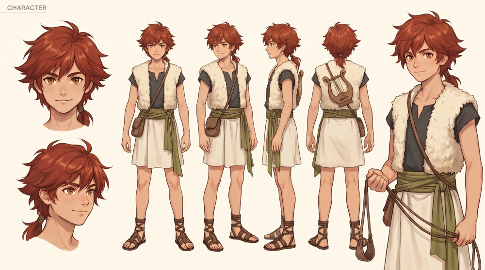
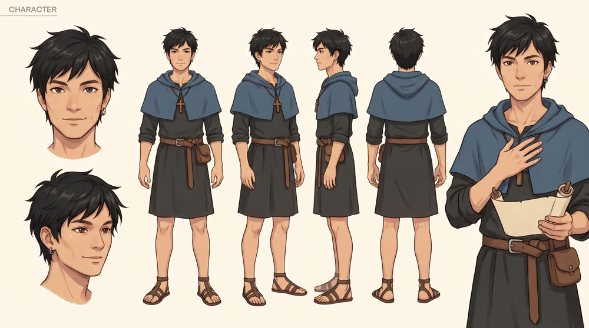
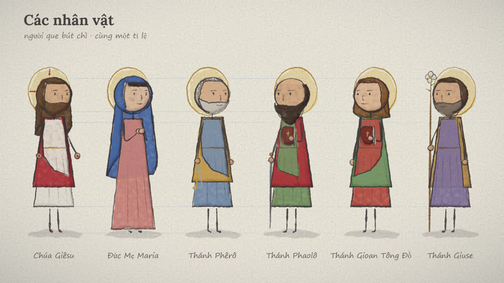
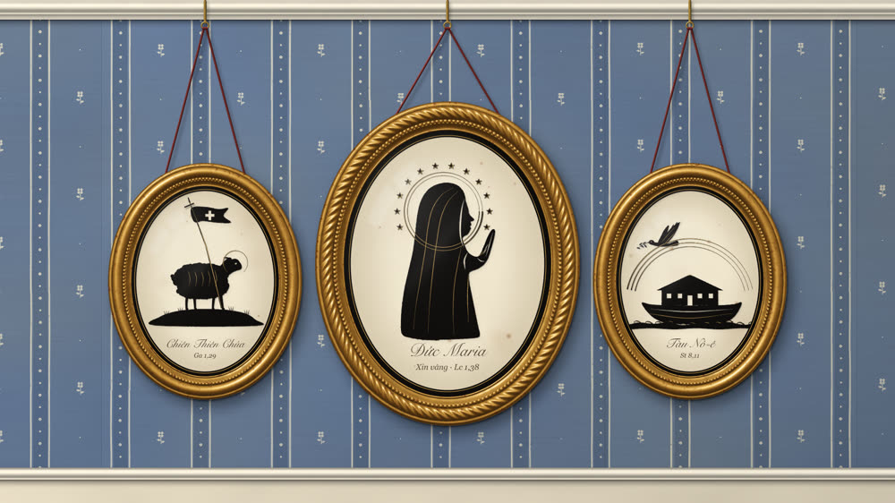
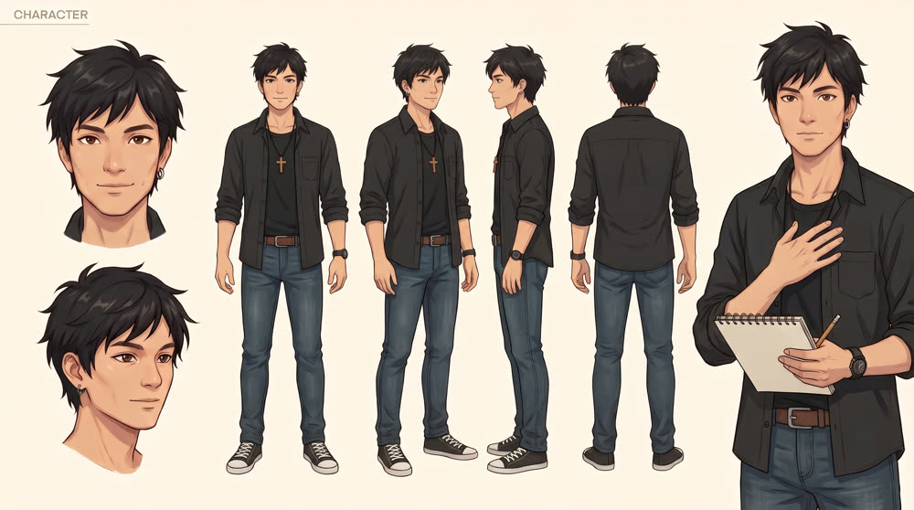
Công cụ nội bộ tự viết để bớt việc tay cho nghiệp vụ bảo hiểm. Trang này chỉ mô tả bài toán và cách làm, không kèm dữ liệu nội bộ.
Trợ lý trả lời khách 24/7 qua live chat, Telegram và email. Agent chỉ trả lời từ kho chính sách nội bộ đã lập mục lục; không tìm thấy thì chuyển cho người.
Thư viện Python lọc hợp đồng xe đến hạn theo chi nhánh và khoảng ngày, xuất thẳng ra file Excel nhiều sheet cho phòng kinh doanh.
Công cụ gọi API hệ thống BPM để duyệt nhiều bút toán một lần, lọc theo chi nhánh và số tiền, có chế độ chạy thử trước khi duyệt thật.
Bấm nút và nhập ô trên màn hình Oracle Forms theo tên, qua Java Access Bridge, để chạy báo cáo kế toán mà không cần thao tác tay.
Bài thuyết trình dựng bằng code, có chuyển động và bấm chuyển trang, xuất kèm bản PowerPoint.
Từ văn bản quy trình, tự vẽ sơ đồ luồng công việc theo phòng ban để đưa vào tài liệu hướng dẫn.
Bộ đồ nghề
Hình & video: ComfyUI · Gemini · Google Flow · Real-ESRGAN / Dựng: Remotion · HyperFrames · ffmpeg / Code: Python · JavaScript · Claude Code